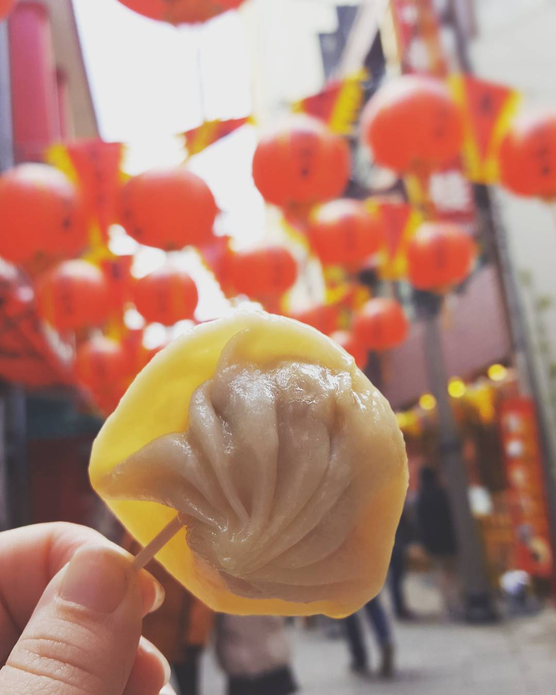
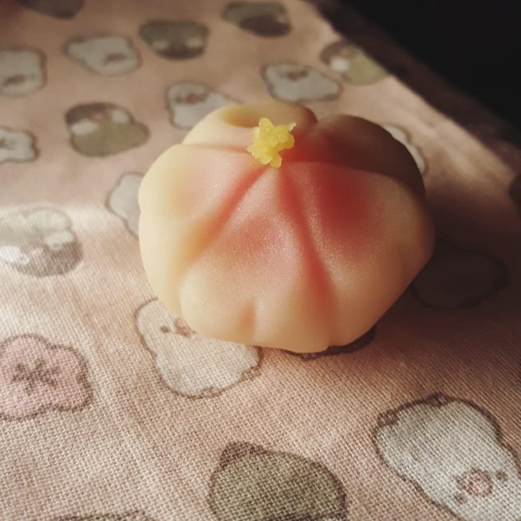
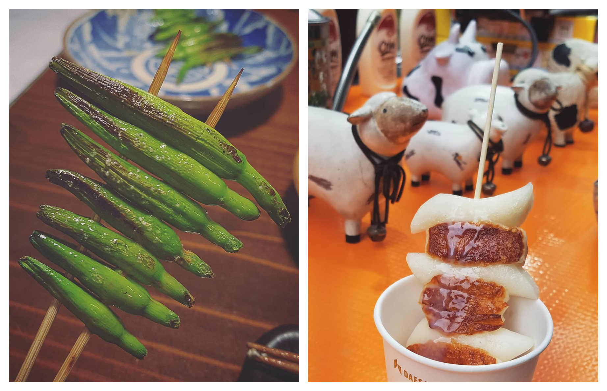
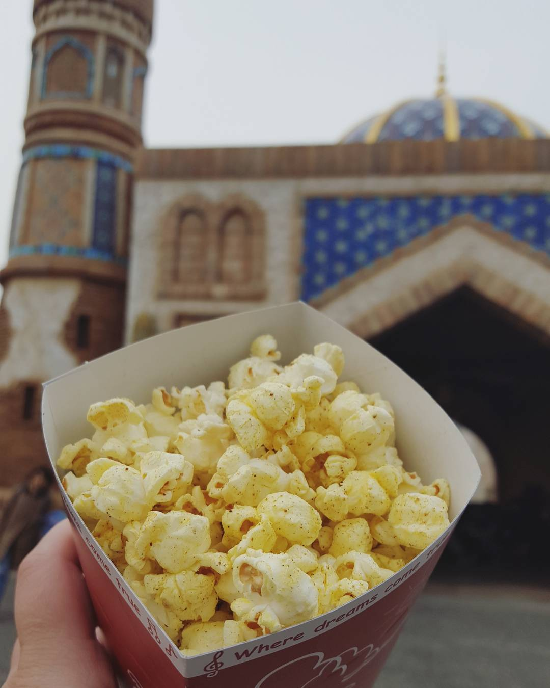
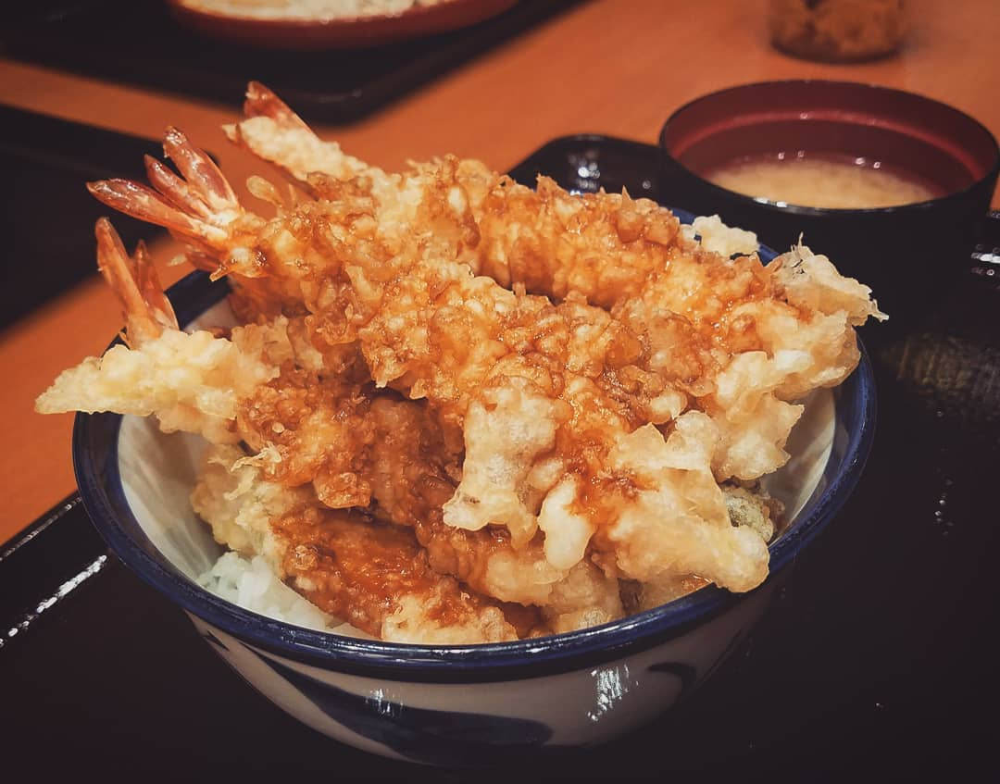
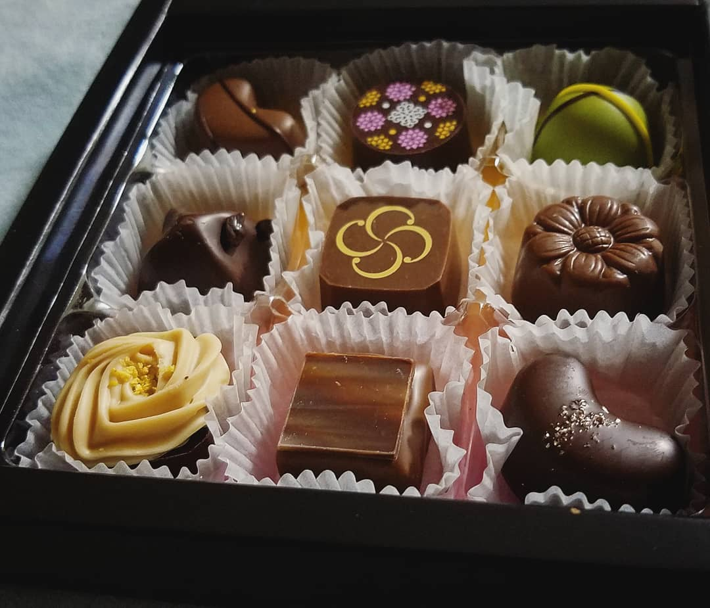

I consider myself something of a foodie. When I'm getting ready to travel, the first thing I look at is the menu. When my airbnb hosts asks what questions I have, I always ask for their favorite local restaurant. For me, food is the key to memories and cultural understanding and my favorite way to explore new places. Here's a few memorable bites from my time in Japan and South Korea.
Nagasaki, Japan: Lantern Festival
For my birthday, a friend and I went to Nagasaki for the annual Chinese Lantern festival. There were thousands of lanterns hanging along the streets and riverbank, giant dragon lanterns that could hold 10 people dancing through the streets, and of course, delicious Chinese-style street food. In the cold weather, there's nothing like a hot soup dumpling, a mushroom and rice onigiri steamed in a lotus leaf, or some crispy, sweet black sesame dango.
A soup dumpling in the streets of Nagasaki. We ate a lot of Chinese street food at the Lantern Festival.
Soja-shi, Okayama, Japan: A Sweet Gift from a Teacher
And of course, you want to eat local specialties as well as interesting or pretty foods when you're traveling. "Wagashi" are small, decorative, hand-formed sweets that date back hundreds of years in Japan. The shape and filling often reflects the season and local specialities.
This beautiful wagashi, made from "shiroanko" (sweet white bean paste), is in the shape of a sakura blossom for spring. Bamboo reeds are gently pressed into the paste to form the shape of the petals.
Kurashiki, Japan: Bikan Chiku Yakiniku // Seoul, South Korea: Myongdong Street Market
One of my favorite things is getting a crash course in local food through quick bites. In Japan, yakiniku joints (grilled chicken skewers, amongst other skewered delights) and izakaya (pubs that serve beer and small plates of food) are tucked into every alley in every corner of the country. When some co-workers invited me to an "enkai" (a drinking party, one of Japan's most popular social conventions), we ate lots of chicken, drank cold beer, and tried some new exciting things. The most exciting revelation to me was "Yuri no Tsubomi" (young lily flower buds), which were brushed with aged soy sauce and sprinkled with sea salt, then grilled in the traditional yakiniku way: on skewers over charcoal.
In Korea, especially in Seoul, there is more street food in the markets than one man can ever eat in a day. And trust me, I have put forth multiple valiant efforts. But even though the temptations seem neverending: from spiral cut potatoes to a cup of spicy soft-shell crab to steaming buns filled with japchae, my favorite quick bite is a simple one. "Tteokbokki" (Korean-style rice cake) and cheese skewers with a sweet milk sauce drizzled over top just makes me happy. As strange of a combination as it is, this little bite is pure heaven and will always be one of my favorite midnight snacks in Seoul's Myeongdong Market Street.
"Yuri no Tsubomi" // "Tteokbokki" (Korean-style rice cake) and cheese skewers with a sweet milk sauce
Tokyo, Japan: Tokyo Disneyland
If there's a particularly well-known food, you should try it to get a feel for the local cuisine and culture. Even just interesting snacks can tell you a lot about the kinds of flavors that are popular!
Tokyo Disneyland is known for its many different flavors of popcorn. This is Curry flavored popcorn from Aladdin's "Arabian Coast".
Hiroshima, Japan: Ebitenya
Another great food is local comfort food. What's something filling, flavorful, and comforting that people indulge in. "Donburi", or rice bowls, are popular all pver Japan. But in Hiroshima, shrimp are a local speciality, and the ebitendon is filled to overflowing with soft, delicious shrimp tempura.
"Ebi Tendon", crispy tempura shrimp over soft, fluffy rice.
Food is also tied to different times of the year. What does everyone eat on Valentine's Day? The universal language of love is really chocolate. And Japan is no exception. Valentine's Day chocolates from my coworkers in Japan. My favorite was the "Shouyu Choco", a soy sauce chocolate with a sweet and salty flavor that you definitly won't find in America.
Valentine's Day chocolates, featuring flavors like matcha (Japanese green tea), black seasame, soy sauce, sweet potato, and yuzu.
Tell me about a food memory you have! What's the best quick bite you've ever had? Where are you from and what should someone eat when they visit? What would be your dream meal? What's a dessert you ate once that you'll never forget?